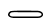
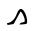
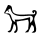
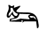
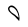
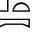

The sign will be added to the hieroglyphic text.
Phonetic codes can correspond to more than one sign. For
instance, iw corresponds to one of

,
,
,
and
. The "official" sign foriw is
according to the
manuel. However, you might want another sign. In this
case, it's quite simple : press the space bar, and the system
will circle through the possibilities, one at a time.
Your last choice will be retained the next time you type the code in this session.
':' and '*' will add the next sign respectively below and besides the last sign entered.
'enter' has two consequences : it validates a sign (if there is one), and it adds a new line.
If no code has been entered (that is, if the code window is entered), the previous grouping sign type will group the last two cadrats. It looks a bit strange, but you will see that it's quite natural. you can use it to group signs as an afterthough.

, you can :